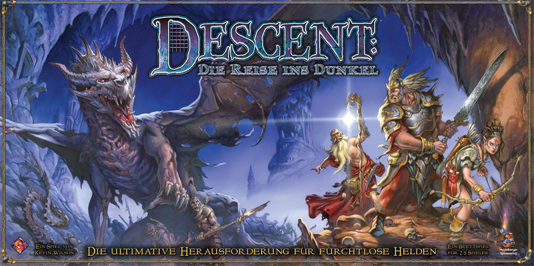

Zurück zur Übersicht
Descent: Die Reise ins Dunkel

Typ
Klassischer Dungeon Crawler
Beschreibung
Descent ist (leider) unser bisher einziger klassischer Dungeon Crawler, d.h. die Spieler schlüpfen in die
Rollen von Helden und kämpfen sich durch einen Dungeon voller Monster. Die Seite des bösen Overlords wird
dabei von einem der Spieler übernommen. Die einzelnen Missionen sind sind unabhängig voneinander spielbar
und steigen in der Schwierigkeit an. Die Helden müssen gut taktieren um sich gegen einen guten Overlord
durchsetzen zu können. Dafür sollten sich alle aber einige Stunden Zeit nehmen, vor allem wenn sie ihre Züge
gerne optimal planen ;)
Für
- Abenteurer
- Ausdauernde
- Frustresistente
- Taktierer
- Teamgeister
Schnell erklärt
- Beispielkarte mit Monster und Held aufbauen
- Spielerbereich und Overlord-Bereich aufbauen, jeweils nur für dieses Monster/Helden.
- Overlord-Zug durchführen
- Spielerzug durchführen, mit Bewegung, Angriff, Spezialaktionen.
- Fernkampf, Sichtline und Monster-Spawn erklären.
- Spielziel, Rundenablauf, Questmarker erklären.
- Spezialfähigkeiten, Inventar und Charakter-Weiterentwicklung erklären
Zurück zur Übersicht